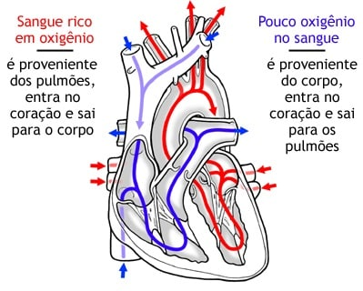

O sistema circulatório é um sistema de órgãos vitais que fornece substâncias essenciais a todas as células para que funções básicas ocorram.
Também conhecido como o sistema cardiovascular, é uma rede composta do coração como uma bomba centralizado, sangues vasos que distribuem sangue por todo o corpo, e o sangue em si, para o transporte de substâncias diferentes.
O sistema circulatório é dividido em duas alças separadas: o circuito pulmonar mais curto que troca sangue entre o coração e os pulmões por oxigenação; e o circuito sistêmico mais longo que distribui sangue por todos os outros sistemas e tecidos do corpo.
Ambos os circuitos começam e terminam no coração.

Função
A principal função do sistema circulatório é fornecer oxigênio aos tecidos do corpo, removendo simultaneamente o dióxido de carbono produzido pelo metabolismo.
O oxigênio está ligado a moléculas chamadas hemoglobina que estão na superfície dos glóbulos vermelhos no sangue.
Começando no coração , sangue desoxigenado (contendo dióxido de carbono) é devolvido a partir da circulação sistémica para o lado direito do coração .
É bombeado para a circulação pulmonar e entregue aos pulmões , onde ocorrem trocas gasosas.
O dióxido de carbono é removido do sangue e substituído por oxigênio.
O sangue agora é oxigenado e retorna ao lado esquerdo do coração .
A partir daí, ele é bombeado para o circuito sistêmico, fornece oxigênio aos tecidos e retorna novamente para o lado direito do coração .
O sangue também atua como um excelente meio de transporte de nutrientes, como eletrólitos e hormônios.
O sangue também transporta resíduos, que são filtrados do sangue no fígado.
Circulação pulmonar
O sangue desoxigenado da circulação sistêmica retorna ao átrio direito através da veia cava superior e inferior .
O seio coronário, retornando sangue da circulação coronária, também se abre para o átrio direito.
O sangue no átrio direito flui para o ventrículo direito através da valva atrioventricular direita ( Tricúspide / Átrioventricular direita ) durante a diástole.
Durante a sístole, o ventrículo direito se contrai, direcionando o sangue para o cone arterioso na base do tronco pulmonar .
A contração do ventrículo faz com que a valva tricúspide se feche, impedindo o refluxo de sangue para o átrio direito.
Entre o cone arterioso e o tronco pulmonar há uma valva; a valva pulmonar (Semilunar pulmonar).
Na diástole, a valva se fecha para impedir o retorno do sangue para o ventrículo direito.
O tronco pulmonar se divide em uma artérias pulmonares direita e esquerda , servindo os pulmões direito e esquerdo, respectivamente.
O sangue desoxigenado flui para os capilares de cada pulmão, onde é então oxigenado.
As veias pulmonares coletam o sangue recém oxigenado do pulmão e o devolvem ao átrio esquerdo, onde será transferido para a circulação sistêmica.

Circulação sistêmica
O sangue oxigenado entra no átrio esquerdo a partir da circulação pulmonar pelas veias pulmonares .
Durante a diástole, o sangue passa do átrio esquerdo para o ventrículo esquerdo através da valva atrioventricular esquerda ( Bicúspide / Átrioventricular esquerda ).
Na sístole, o ventrículo esquerdo se contrai, forçando o sangue para a a. aorta .
O sangue passa através da válvula aórtica para a aorta ascendente .
A aorta ascendente torna-se o arco da aorta , onde três grandes artérias se ramificam: o tronco braquiocefálico, a artéria carótida comum esquerda e a artéria subclávia esquerda.
Essas artérias fornecem sangue oxigenado para a cabeça, o pescoço e os membros superiores.
A aorta descendente é a continuação do arco da aorta inferiormente.
No tórax, é referida como aorta descendente ou torácica e emite numerosos ramos no tórax.
Este último passa para a cavidade abdominal através do m. diafragma através do hiato aórtico ao nível de T12.
A partir daí, é chamada de aorta abdominal.
A aorta abdominal dá ramos às estruturas na cavidade abdominal e ao redor dela e termina bifurcando-se nas artérias ilíacas comuns , que suprirão a cavidade pélvica e os membros inferiores.
Os ramos da aorta passam em direção às estruturas pretendidas, com ramificações ocorrendo ao longo de seu comprimento.
Os ramos terminais entram nos tecidos e passam para os leitos capilares dos tecidos em vasos chamados arteríolas.
As trocas gasosas ocorrem entre o sangue e os tecidos.
O sangue é coletado dos capilares pelas vênulas , que se unem para formar as veias da circulação sistêmica.
Essas veias acabam drenando para o átrio direito através das veias cava superior e inferior.